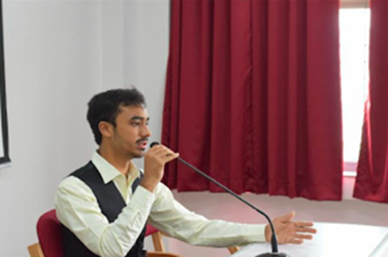

MESSAGE FROM SECRETARY GENERAL
With a profound sense of gratitude, I would like to extend warm greetings to the esteemed delegates and faculty members for their confidence bestowed on me to take up the responsibilities as Secretary General of ACMUN 2019.
This ambitious project was born 3 months ago, with the goal of helping people understand more about the world they live in and improve their public speaking skills in a refined exercise of diplomacy and negotiations. Our core mission is mentioned in this year’s motto and theme: For a better Tomorrow as this conference was created with the main aim of shaping the youth of Anthony Claret in becoming the decision makers of tomorrow irrespective of the various facets of society they come from.
In our very first edition we consist of Committees dealing with diverse issues such as Universal Health Coverage and The protection of Civilians in Armed Conflict.With this premise in the background I would like to thank Rev. Father Benny Mathew , Ms Chandralekha , Ms. Bindu Pillai and Ms. Hema Raghu for giving us an opportunity most people our age do not have, for giving me and this year’s team their full trust and for making this project a forefront for other grander initiatives .
For any additional inquiries, please do not hesitate to contact us. On behalf of the entire ACMUN team, I look forward to giving you all a warm welcome at this year’s edition of ACMUN
Regards,
Karan Suresh
Secretary General - ACMUN 19’
 AnthonyClaret
AnthonyClaret